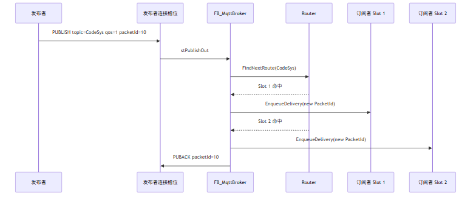
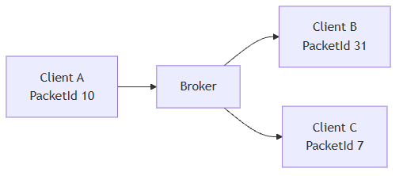
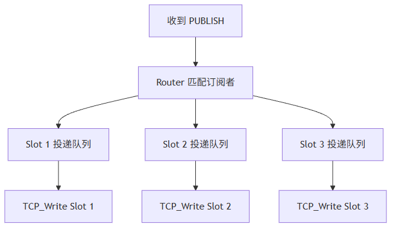
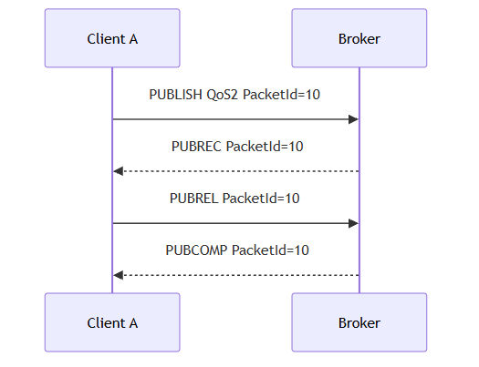
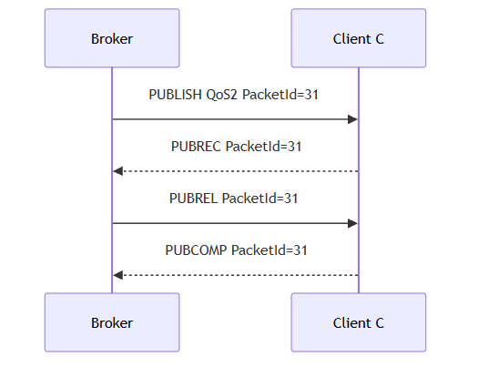

这一篇讲 Broker 侧 PUBLISH 主链路。重点是：发布者发来的 PacketId 和 Broker 转发给订阅者的 PacketId 不是同一个作用域；QoS0、QoS1、QoS2 在 Broker 侧要分入站事务和出站事务；慢客户端不能拖垮其他客户端。
适合谁收藏
- 正在实现 Broker 消息转发的人
- QoS1 / QoS2 经常重复、超时、断线的人
- 想理解 PacketId 作用域的人
- 想把 Broker 写成可维护状态机的人
PUBLISH 看起来最简单：
收到消息，找到订阅者，转发出去。
但 Broker 真正掉线、重复、乱序、延迟，很多都藏在这里。
先给结论：
Broker 不能直接把发布者的 PacketId 原封不动转发给订阅者。 PacketId 是一条客户端连接内的事务编号，Broker fanout 时必须为每个目标连接重新分配。
当前讨论的 fanout 仍然是 PLC 侧轻量 Broker 的小规模路由，不追求通用 Broker 的海量订阅索引和跨节点分发。
一、一条 PUBLISH 进入 Broker 后发生了什么

注意最后一行：
发布者的 PUBACK packetId=10 是对发布者连接的确认。 订阅者收到的 PUBLISH 会使用订阅者连接自己的 PacketId。
二、PacketId 的作用域
假设发布者 A 发来：
PUBLISH PacketId = 10Broker 要转发给 B 和 C：
| 连接 | PacketId 作用 |
|---|---|
| A -> Broker | A 这条连接的入站事务 |
| Broker -> B | B 这条连接的出站事务 |
| Broker -> C | C 这条连接的出站事务 |
这三者不能混用。

如果 Broker 直接把 10 转给 B 和 C，后果可能是：
- 和 B/C 当前未完成事务冲突。
- 重发时无法判断 ACK 属于哪条投递。
- QoS2 四步握手状态错乱。
- 客户端认为收到重复或非法报文。
三、QoS0 / QoS1 / QoS2 在 Broker 侧的差异
| QoS | 发布者到 Broker | Broker 到订阅者 | 事务要求 |
|---|---|---|---|
| QoS0 | 收到即处理 | 直接投递 | 不需要 ACK |
| QoS1 | 收到后回 PUBACK | 目标连接等待 PUBACK | 至少一次，可能重发 |
| QoS2 | PUBREC / PUBREL / PUBCOMP | 目标连接独立 QoS2 闭环 | 恰好一次语义，状态最多 |
Broker 里必须拆成两套事务：
| 事务方向 | 作用 |
|---|---|
RxInflight | 处理发布者发来的 QoS1/QoS2 |
TxInflight | 处理 Broker 转发给订阅者的 QoS1/QoS2 |
这不是为了显得复杂，而是 PacketId 作用域决定的。
四、fanout 不能让慢客户端拖垮其他客户端
一个 PUBLISH 可能命中多个订阅者。
如果某个客户端很慢，Broker 不能阻塞整个路由链。
当前设计是：

每个客户端有自己的投递队列。
| 队列 | 作用 |
|---|---|
| 协议响应队列 | CONNACK、SUBACK、PUBACK、PINGRESP 等，优先发送 |
| 普通投递队列 | PUBLISH fanout 后进入目标客户端 |
| QoS 事务表 | 记录等待 ACK 的出站消息 |
协议响应必须优先，因为客户端协议状态机在等它。
五、QoS2 不可怕，可怕的是状态没闭环
QoS2 的链路是：

Broker 转发给订阅者时，又是另一条 QoS2 链：

这两条链不能混在一起。
否则测试 QoS2 时就会出现：
- 客户端显示发送成功，但订阅端不收。
- Broker 重复发同一条。
- 客户端过一会儿断开。
- PacketId 表看起来“莫名其妙占满”。
六、ST 代码入口
| 代码入口 | 作用 |
|---|---|
FB_MqttBroker.M_HandlePublish | 处理连接槽位输出的发布消息 |
FB_MqttBroker.M_RoutePublishNow | 根据路由表 fanout 到订阅者 |
FB_MqttBrokerConnection.M_EnqueueDelivery | 写入目标连接投递队列 |
FB_MqttBrokerTxScheduler.M_RegisterPublish | 注册出站 QoS 事务 |
FB_MqttBrokerConnection.M_AssignPacketId | 为目标连接分配 PacketId |
FB_MqttBrokerCodec.M_BuildPublish | 构造发给订阅者的 PUBLISH |
关键逻辑可以压缩成：
// 发布者 PacketId 只用于发布者连接的 ACK。
uiSourcePacketId := stPublishIn.uiPacketId;
// fanout 到订阅者时，必须按目标连接重新分配 PacketId。
uiTargetPacketId := aConnections[uiTargetSlot].M_AssignPacketId();
aConnections[uiTargetSlot].M_EnqueueDelivery(
sTopicName := stPublishIn.sTopicName,
pPayload := stPublishIn.pPayload,
uiPayloadLen := stPublishIn.uiPayloadLen,
eQoS := eTargetQoS,
uiPacketId := uiTargetPacketId);七、现场排障表
| 现象 | 优先检查 | 可能原因 |
|---|---|---|
| QoS1 重复消息很多 | TxInflight 是否正确收 PUBACK | 重发事务没闭环 |
| QoS2 一发就断 | PUBREC/PUBREL/PUBCOMP 状态 | 入站和出站事务混用 |
| 发布者成功但订阅者收不到 | 投递队列水位 | 路由命中但目标队列满 |
| 一个慢客户端影响全部 | 各 Slot 队列是否独立 | fanout 同步阻塞 |
| PacketId 冲突 | 目标连接 PacketId 分配 | 直接沿用发布者 PacketId |
模型边界与验证路径
PUBLISH fanout 本质上是状态作用域问题。
表面上看，Broker 只是把一条消息转给多个订阅者。往上看一层，它其实要维护三类边界：发布者连接边界、订阅者连接边界、QoS 事务边界。
| 结论 | 可信度 | 依据 | 验证路径 |
|---|---|---|---|
| PacketId 是连接作用域 | high | MQTT QoS 事务语义 | 用两个订阅者同时接收 QoS1，观察各自 PacketId |
| 入站 QoS 和出站 QoS 事务要分开 | high | Broker 既是接收方又是发送方 | 分别观察 RxInflight 和 TxInflight |
| 慢客户端应只影响自身队列 | medium | 当前槽位队列隔离模型 | 故意让一个客户端低速接收，观察另一个客户端延迟 |
这里最容易写错的不是报文格式，而是把“消息 ID”想成全局概念。MQTT 的 PacketId 不是全局消息编号，它只在当前客户端连接里有意义。这个模型边界没想清楚，QoS1 / QoS2 后面基本都会出问题。
八、这一篇你最该记住的 6 句话
- PUBLISH 不是收到就转发，Broker 还要做路由、队列和 QoS 事务。
- PacketId 是连接作用域，不是全局消息 ID。
- Broker 转发给订阅者时，必须按目标连接重新分配 PacketId。
- QoS1 / QoS2 要拆入站事务和出站事务。
- 协议响应队列应该优先于普通 PUBLISH 投递队列。
- 慢客户端必须被隔离在自己的队列里，不能拖垮整个 Broker。
下篇预告
下一篇讲 Broker 不能只会转发 PUBLISH 的三个能力：
Retain、Will、KeepAlive。
这三个功能看起来像补充项，但工业现场非常常用。
完整 ST 代码
下面这段来自 FB_MqttBroker.M_HandlePublish.st。它把入站 PUBLISH 分成三件事：先做 ACL 和统计，再按 QoS 回协议确认，最后才进入 Retain/订阅路由。
IF stPublish.eQoS = E_MqttQoS.byQoS1 THEN
IF fbRxScheduler.M_RecordPublish(stPublish := stPublish, udiNowMs := udiNowMs) THEN
IF (uiSourceSlot >= 1) AND (uiSourceSlot <= GVL_MqttBroker.cnMaxClientSlots) THEN
aConnections[uiSourceSlot].M_EnqueueProtocolAck(
ePacketType := E_MqttPacketType.byPubAck,
uiPacketId := stPublish.uiPacketId,
byReturnCode := 0);
fbRxScheduler.M_CompletePublish(uiSlot := uiSourceSlot, uiPacketId := stPublish.uiPacketId);
stMetrics.udiPubAckSent := stMetrics.udiPubAckSent + 1;
END_IF
END_IF
END_IF
IF stPublish.eQoS = E_MqttQoS.byQoS2 THEN
IF fbRxScheduler.M_RecordPublish(stPublish := stPublish, udiNowMs := udiNowMs) THEN
IF (uiSourceSlot >= 1) AND (uiSourceSlot <= GVL_MqttBroker.cnMaxClientSlots) THEN
aConnections[uiSourceSlot].M_EnqueueProtocolAck(
ePacketType := E_MqttPacketType.byPubRec,
uiPacketId := stPublish.uiPacketId,
byReturnCode := 0);
stMetrics.udiPubRecSent := stMetrics.udiPubRecSent + 1;
END_IF
END_IF
M_HandlePublish := TRUE;
RETURN;
END_IF
M_RoutePublishNow(stPublish := stPublish);fanout 的核心在 M_RoutePublishNow：路由器找到目标连接后，把投递任务放入目标连接队列；如果目标投递 QoS 大于 0，还要登记出站事务。
IF fbRouter.M_FindNextRoute(
stDelivery := stRouteFrame,
stPublish := stPublish,
xRestart := TRUE,
xFound => xRouteFound) THEN
WHILE xRouteFound AND (uiRouteCount < GVL_MqttBroker.cnMaxRouteFanoutPerScan) DO
IF (stRouteFrame.uiTargetSlot >= 1) AND (stRouteFrame.uiTargetSlot <= GVL_MqttBroker.cnMaxClientSlots) THEN
IF aConnections[stRouteFrame.uiTargetSlot].M_EnqueueDelivery(stDelivery := stRouteFrame) THEN
stMetrics.udiPublishDelivered := stMetrics.udiPublishDelivered + 1;
uiRouteCount := uiRouteCount + 1;
IF stRouteFrame.eQoS <> E_MqttQoS.byQoS0 THEN
// M_EnqueueDelivery 会为首次 QoS>0 投递分配“目标连接内”的 PacketId。
// 事务表必须登记这个已分配后的 PacketId，后续订阅者 PUBACK 才能正确清理事务。
fbTxScheduler.M_RegisterPublish(stPublish := stRouteFrame, udiNowMs := udiNowMs);
END_IF
ELSE
stMetrics.udiPublishDropped := stMetrics.udiPublishDropped + 1;
END_IF
END_IF
fbRouter.M_FindNextRoute(
stDelivery := stRouteFrame,
stPublish := stPublish,
xRestart := FALSE,
xFound => xRouteFound);
END_WHILE
END_IFPacketId 的作用域是“单条连接”，所以 Broker 转发时必须给目标连接重新分配，不能把发布者的 PacketId 原封不动转给订阅者。
IF stDelivery.eQoS = E_MqttQoS.byQoS0 THEN
stDelivery.uiPacketId := 0;
ELSIF stDelivery.uiPacketId = 0 THEN
// Packet Identifier 的作用域是单条 MQTT 客户端连接。
// 入站 PUBLISH 的 PacketId 属于发布者连接，不能直接转发给订阅者；
// 首次投递给订阅者时必须在自己的连接内重新分配 PacketId，避免 QoS1/QoS2 确认链路冲突。
M_AssignPacketId(stPublish := stDelivery);
ELSE
// QoS 重发必须沿用首次投递的 PacketId。
// 如果重发时重新分配 PacketId，客户端会 PUBACK 新编号，而事务表仍等待旧编号，
// 结果就是每 2 秒重复投递一次，达到最大重试次数后 Broker 主动断开客户端。
END_IF系列导航
- 系列定位：第 5 篇
- 上一篇：SUBSCRIBE 不是存个字符串：Broker 怎么维护订阅表、通配符和多客户端路由
- 下一篇：Retain、Will、KeepAlive：工业现场为什么不能只会转发 PUBLISH
评论区预留
这里先保留评论和回复结构，不接入第三方服务。后续统一决定登录、匿名、审核、反垃圾和静态站兼容策略。